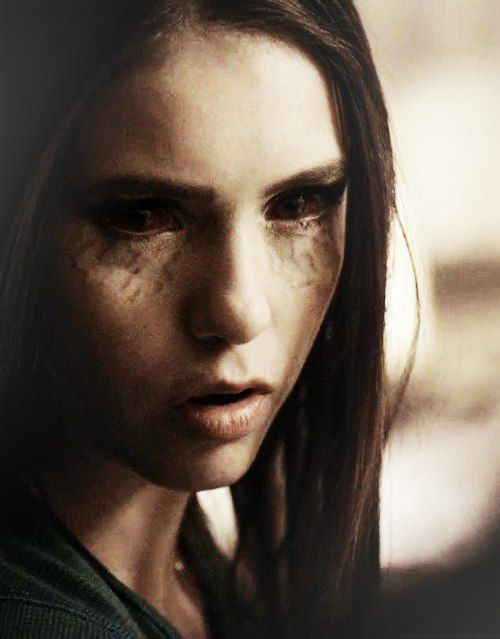
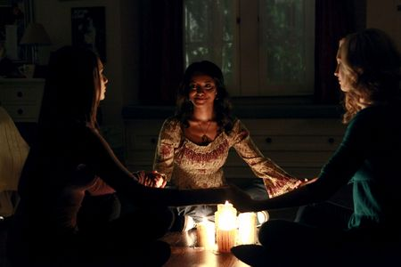
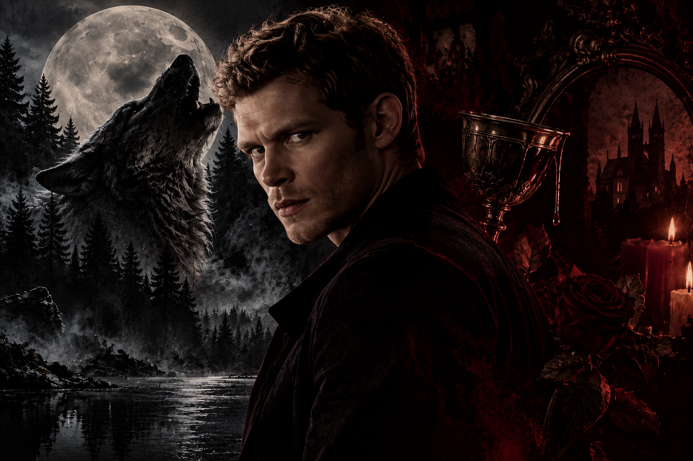
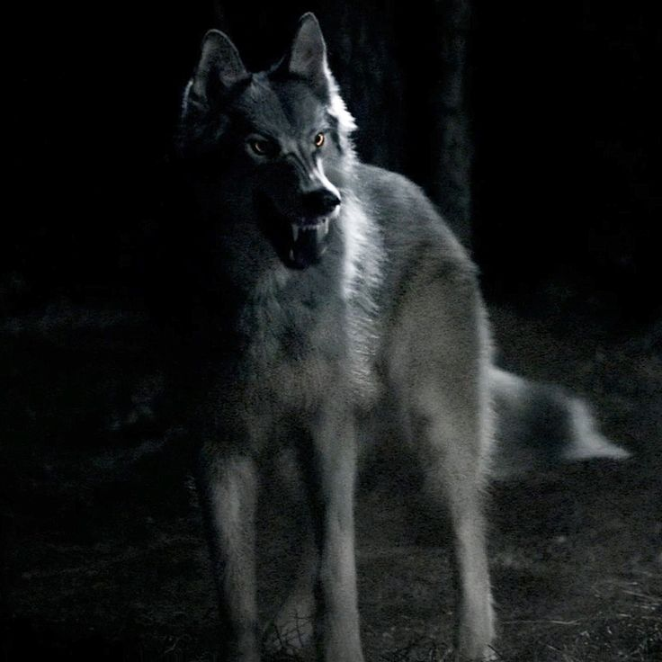

ESPECIES

VAMPIROS
Los vampiros son humanos transformados mediante una combinación de magia y sangre de vampiro. Después de completar la transición, adquieren habilidades sobrenaturales como fuerza, velocidad y sentidos aumentados, además de una capacidad de curación mucho mayor que la de un humano. Para sobrevivir necesitan consumir sangre y pueden utilizar la compulsión para influir en la mente de los humanos. También poseen una gran longevidad y dejan de envejecer físicamente una vez completada su transformación. Sin embargo, no son invencibles. La luz del sol, la madera, el fuego y ciertas sustancias pueden debilitarlos o matarlos, dependiendo de las circunstancias. Stefan y Damon Salvatore son dos de los vampiros más importantes de la historia y muestran las distintas formas en las que un vampiro puede enfrentarse a su naturaleza, sus deseos y su vínculo con los humanos.

DOPPELGÄNGERS
Los doppelgängers son réplicas sobrenaturales de una misma línea de sangre que aparecen a lo largo de la historia. En The Vampire Diaries, existen dos linajes principales: los doppelgängers de Silas y Amara, representados por Stefan Salvatore y Elena Gilbert, y sus respectivos antepasados. Su existencia está relacionada con la magia y el equilibrio sobrenatural. Aunque físicamente son idénticos a sus antepasados, cada doppelgänger tiene su propia personalidad, historia y decisiones. Su sangre también posee propiedades mágicas y ha sido utilizada en distintos rituales. Elena y Stefan son los ejemplos más conocidos, demostrando que incluso cuando el rostro se repite, la persona puede ser completamente diferente.

BRUJAS Y BRUJOS
Las brujas y los brujos son seres humanos capaces de utilizar magia, generalmente conectados con la naturaleza y con una tradición familiar que puede transmitirse de generación en generación. En Mystic Falls, la magia forma parte de la historia del pueblo y está detrás de muchos de los acontecimientos sobrenaturales. Sus poderes pueden utilizarse para realizar hechizos, proteger personas, crear objetos mágicos, romper maldiciones y controlar diferentes fuerzas sobrenaturales. Sin embargo, la magia tiene límites y consecuencias. Bonnie Bennett es uno de los personajes más importantes de esta especie y demuestra cómo una bruja puede llegar a desarrollar un poder extraordinario mientras intenta proteger a quienes ama.

HÍBRIDOS
Los híbridos combinan características de dos especies sobrenaturales diferentes, principalmente vampiro y hombre lobo. Esta combinación les permite reunir habilidades de ambas especies, convirtiéndolos en seres especialmente poderosos. El híbrido más importante de la historia es Klaus Mikaelson, quien logra romper la maldición que impedía que su naturaleza de hombre lobo y vampiro coexistiera. A partir de entonces, busca crear otros híbridos bajo su control. Los híbridos poseen la fuerza y velocidad de un vampiro, pero también las capacidades físicas y características de los hombres lobo. Esta combinación los convierte en una de las especies más peligrosas del universo de The Vampire Diaries. Además, su existencia está directamente relacionada con uno de los grandes conflictos de la serie: el deseo de Klaus de crear una especie que pueda reproducirse y formar una nueva familia de híbridos.

LOBOS Y LOBAS
Los hombres lobo son humanos que poseen una maldición sobrenatural que se activa cuando provocan la muerte de otra persona. A partir de ese momento, durante la luna llena pueden transformarse en lobos y experimentar un aumento considerable de fuerza, velocidad y agresividad. La maldición también afecta sus relaciones y su manera de vivir, ya que deben aprender a controlar una naturaleza que muchas veces no eligieron. Tyler Lockwood es uno de los personajes que mejor representa este proceso: su transformación lo lleva a descubrir secretos sobre su familia y a enfrentarse constantemente con su propia naturaleza. Además, los hombres lobo tienen una característica especialmente importante dentro del universo de la serie: su mordida puede resultar mortal para los vampiros.

THE ORIGINALS
Los Originals, o vampiros originales, son los primeros vampiros que existieron. Fueron creados mediante magia por Esther, una poderosa bruja, con el objetivo de proteger a sus hijos. Al convertirse en los primeros de su especie, dieron origen a los linajes de vampiros que existen posteriormente. Son extremadamente poderosos, resistentes y prácticamente inmortales. No pueden ser asesinados mediante los métodos habituales utilizados contra otros vampiros y poseen una fuerza muy superior. La familia está formada principalmente por Mikael, Esther, Finn, Elijah, Klaus, Kol, Rebekah y Henrik. Entre ellos, Klaus ocupa un lugar particular: además de ser un Original, es el primer híbrido verdadero de vampiro y hombre lobo.